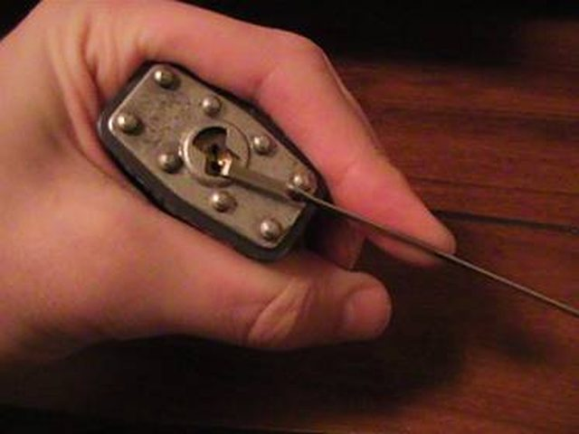
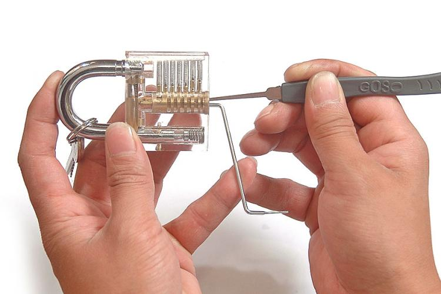

How to:
1. Stick the tension wrench in the bottom and put slight pressure on it.

2. Slide the rake in on the top and move it back and forth while keeping slight pressure on the tension wrench.

3. Mess with amount of pressure you put on the tension wrench and eventually it'll happen.